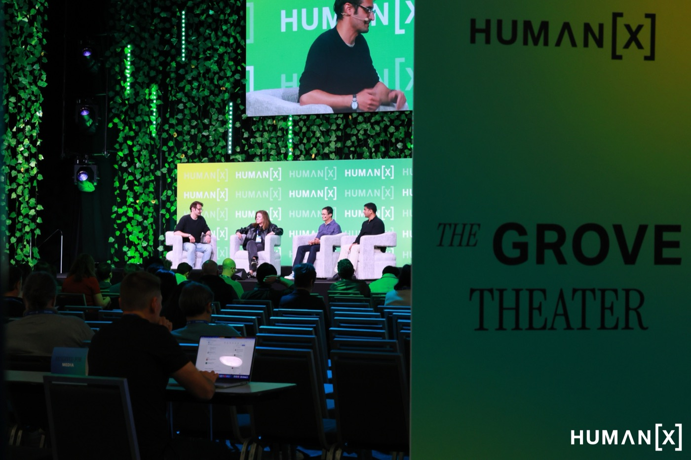

Completion · Scale · Real Numbers
AI Moved From Pilot to Production
What Happened
The biggest companies in the world aren't experimenting with AI anymore — they're running on it. Uber's CTO revealed that 70% of their code is now AI-generated. A customer service policy project expected to take a year was finished in two weeks. Zoom announced that meetings now trigger automated task completion — updating your CRM, sending follow-ups, creating project tickets — all before the meeting ends. Pigment showed that financial modeling that took nine months now takes one day. And as tokenThe cost structure of running AI — measured in tokens (roughly one word each). Companies now track token spending like they track cloud computing costs. costs continue to drop, the economics of running these systems at scale are becoming viable for organizations of every size.
What This Means for You
The piloting phase is over. If your organization is still running 'AI experiments' or 'proof of concepts,' you're falling behind companies that have already integrated AI into daily operations. This doesn't mean you need to move recklessly — but it does mean the question has shifted from 'Should we use AI?' to 'Why aren't we using it yet?' The companies pulling ahead aren't the ones with the best technology. They're the ones that committed to deploying it, learned from the mistakes, and kept going.
One Thing to Try
Identify one workflow in your organization that currently takes weeks or months. Ask: "What would this look like if AI handled 80% of the execution and a human handled the judgment calls?" That question alone will reveal where you're leaving time on the table.